Employee Database Analysis
Github RepositoryThe purpose of this analysis is to research the employees of a corporation from the 1980s and 1990s. All that remain of the database of employees from that period are six CSV files. These are the problems that were solved by running queries on PostgreSQL:
- List the employee number, last name, first name, sex, and salary for all employees.
- List first name, last name, and hire date for employees who were hired in 1986.
- List the managers of each department with the following information: department number, department name, the manager's employee number, last name, first name.
- List the department of each employee with the following information: employee number, last name, first name, and department name.
- List first name, last name, and sex for employees whose first name is "Hercules" and last names begin with "B."
- List all employees in the Sales department, including their employee number, last name, first name, and department name.
- List all employees in the Sales and Development departments, including their employee number, last name, first name, and department name.
- In descending order, list the frequency count of employee last names, i.e., how many employees share each last name.
Then, by importing the database into Pandas, the following charts were created:
- Histogram to visualize the most common salary ranges for employees
- Bar chart of average salaries of employees by title
Languages
- Python
- SQL
Data Extraction & Manipulation
- SQLAlchemy
- Pandas
- Matplotlib
Databases
- PostgreSQL
Additional Technologies
- Entity Relationship Diagram (ERD)
- Jupyter Notebook
emplyees_db_schema.sql- PostgreSQL schema to create database tables
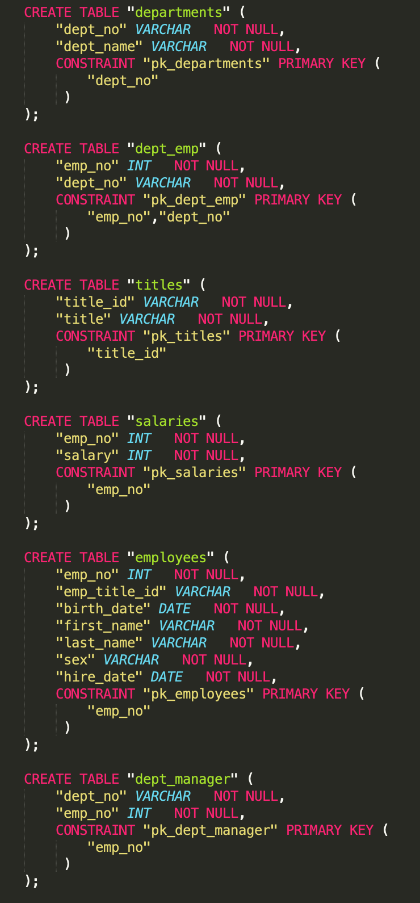
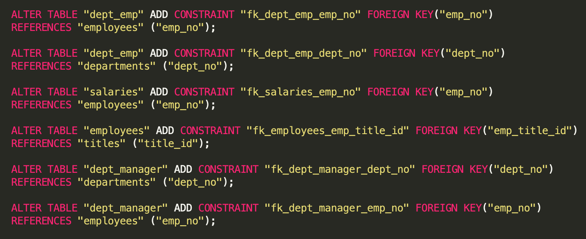
employees_db_queries.sql- SQL queries to obtain desired outputs
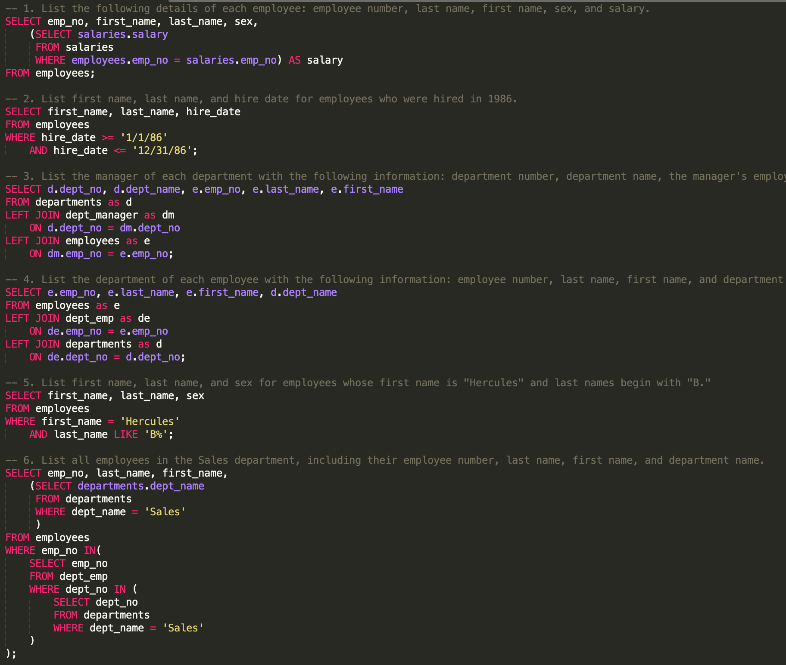
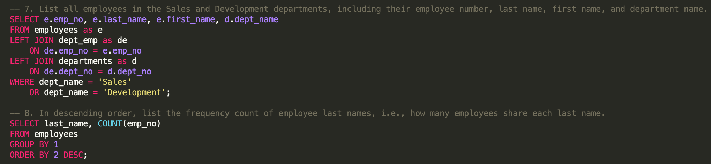
employees_db_graphs.ipynb- uses SQLAlchemy to import data from database and Pandas and Matplotlib to create figures
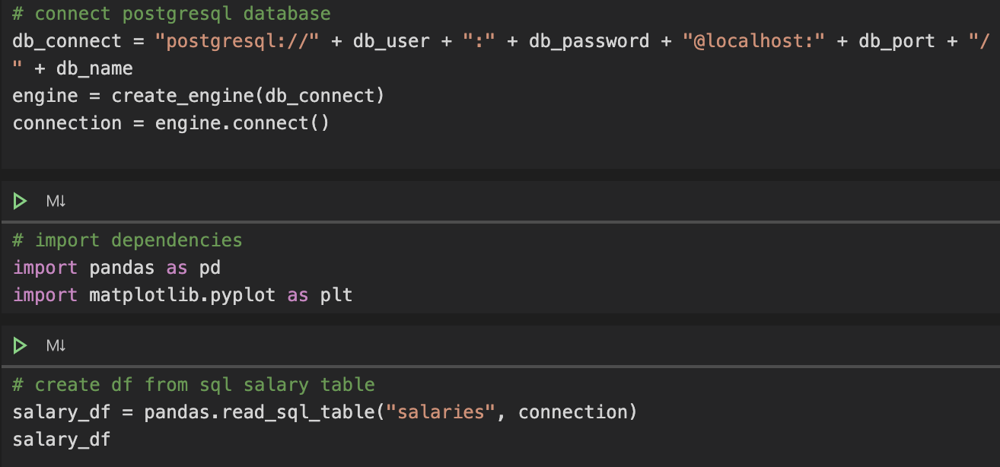
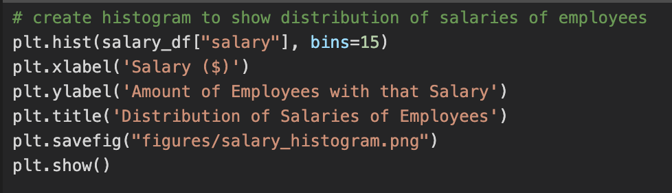
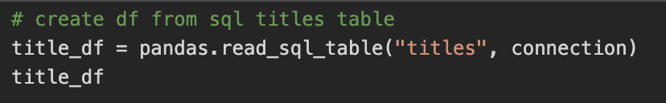
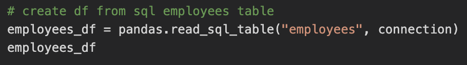
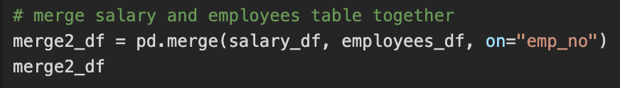
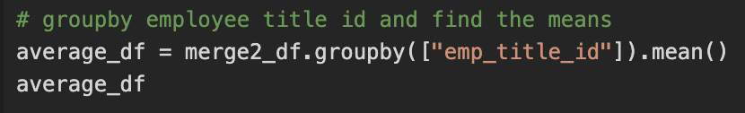
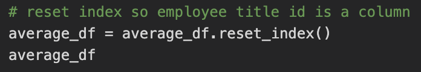
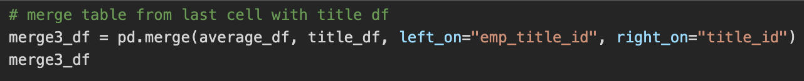
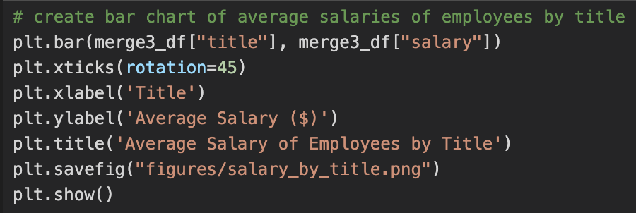